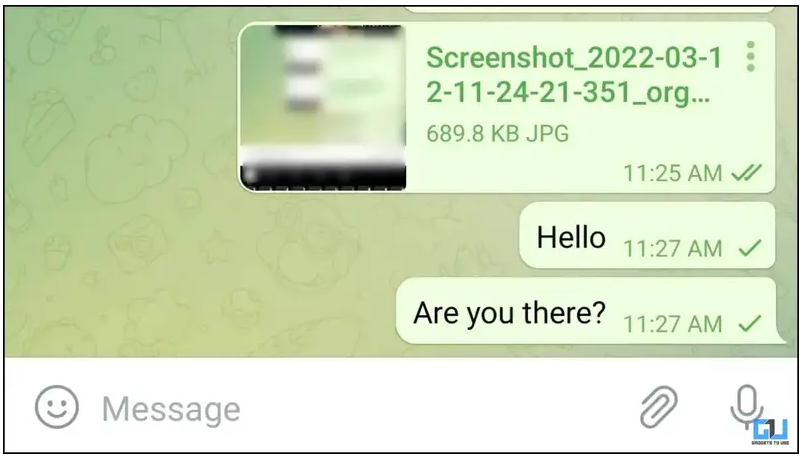

Telegram中一个勾表示消息已成功发送到服务器，但尚未被接收方的设备读取。这意味着消息已经通过网络发送出去，但接收方设备还没有下载或查看该消息。两个勾则表示消息已经被接收方设备收到，若勾变蓝色，则说明接收方已阅读该消息。

在Telegram上，添加陌生人最常见的方式是通过用户名。你可以搜索对方的用户名并发送消息，无需知道对方的电话 […]
Telegram中一个勾表示消息已成功发送到服务器，但尚未被接收方的设备读取。这意味着消息已经通过网络发送出去 […]
要取消电报加密对话（即秘密聊天），打开与对方的加密对话窗口，点击右上角的菜单按钮（三个点），选择“结束秘密聊天 […]
在Telegram设置邮箱，请按照以下步骤操作：打开Telegram，进入“设置”。点击“编辑个人资料”。找到 […]